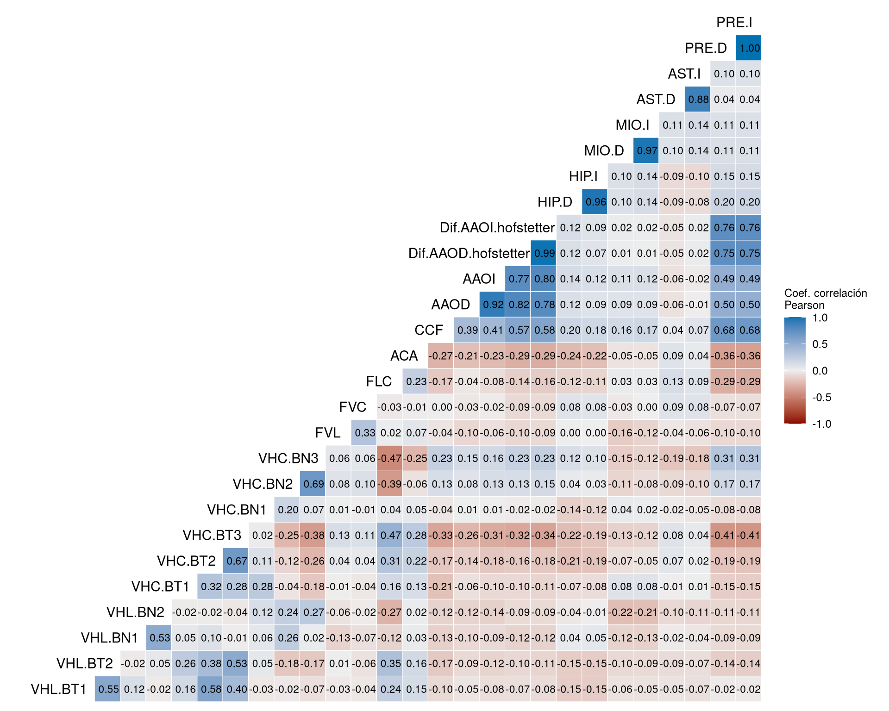
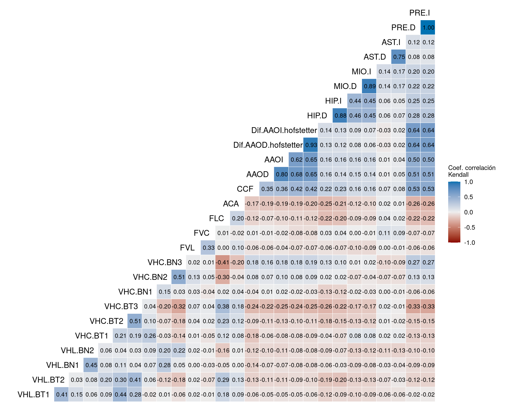
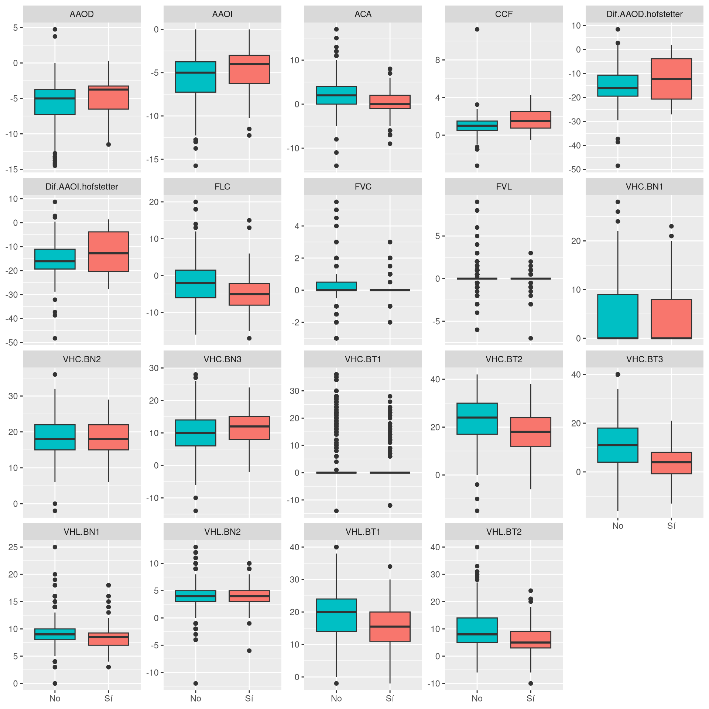
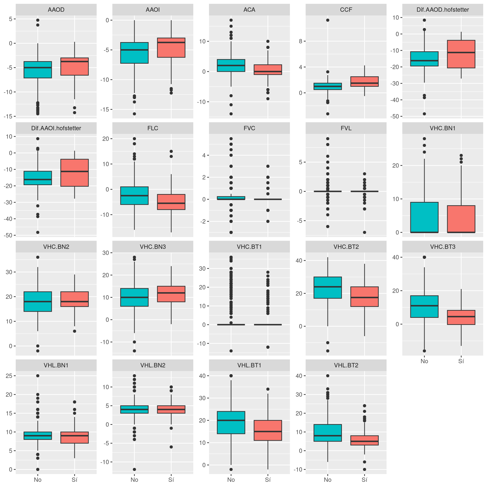
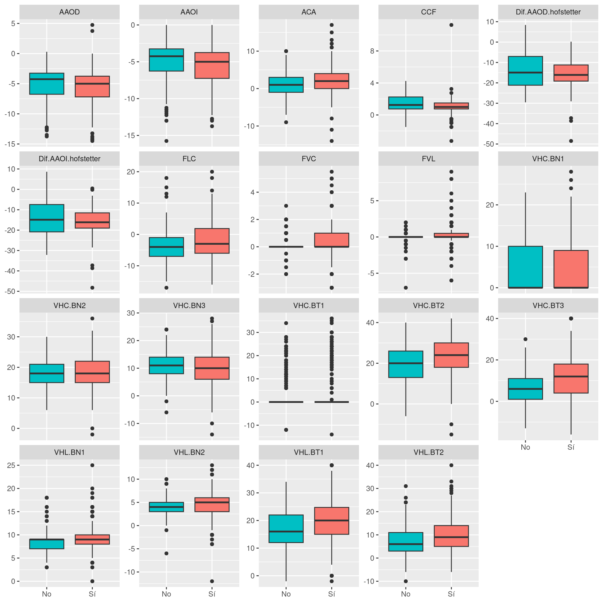
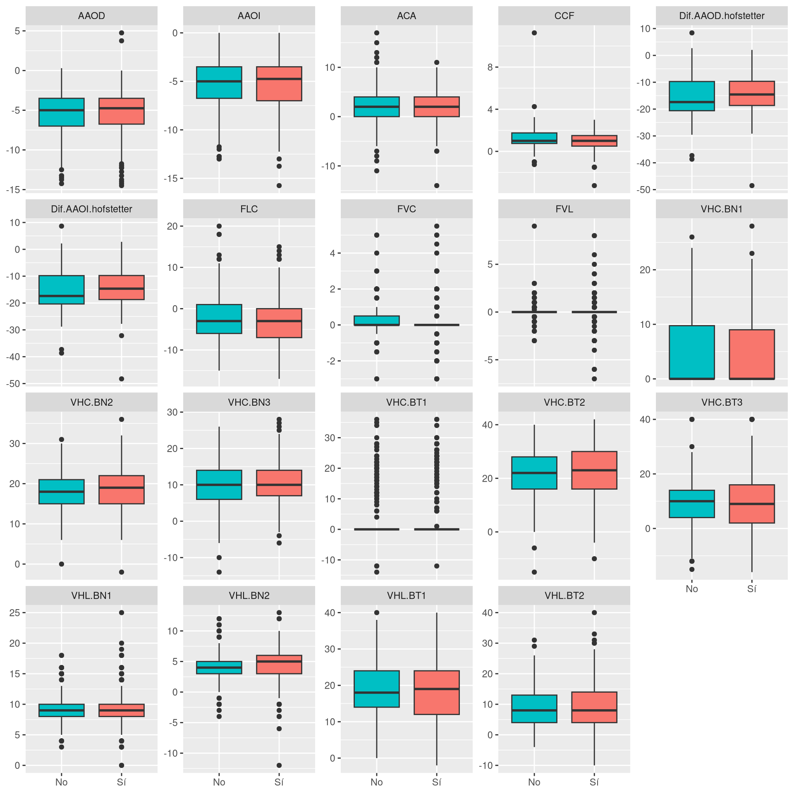
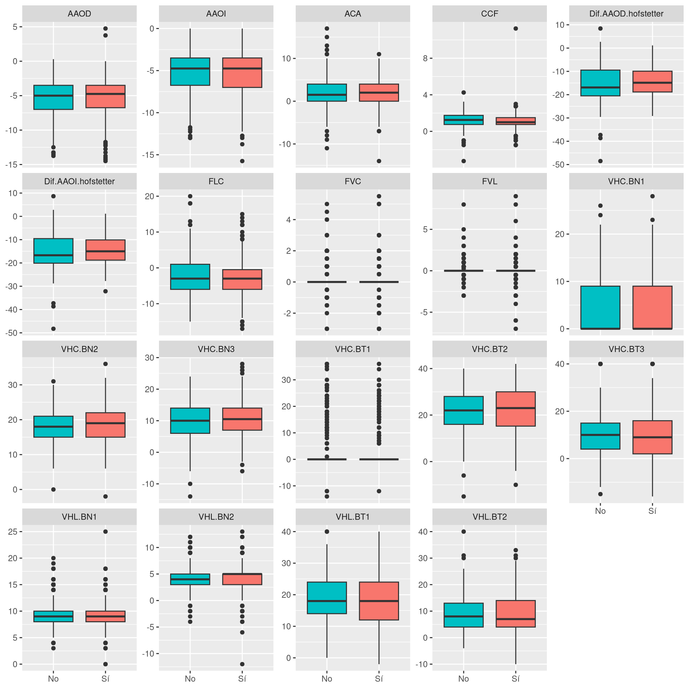
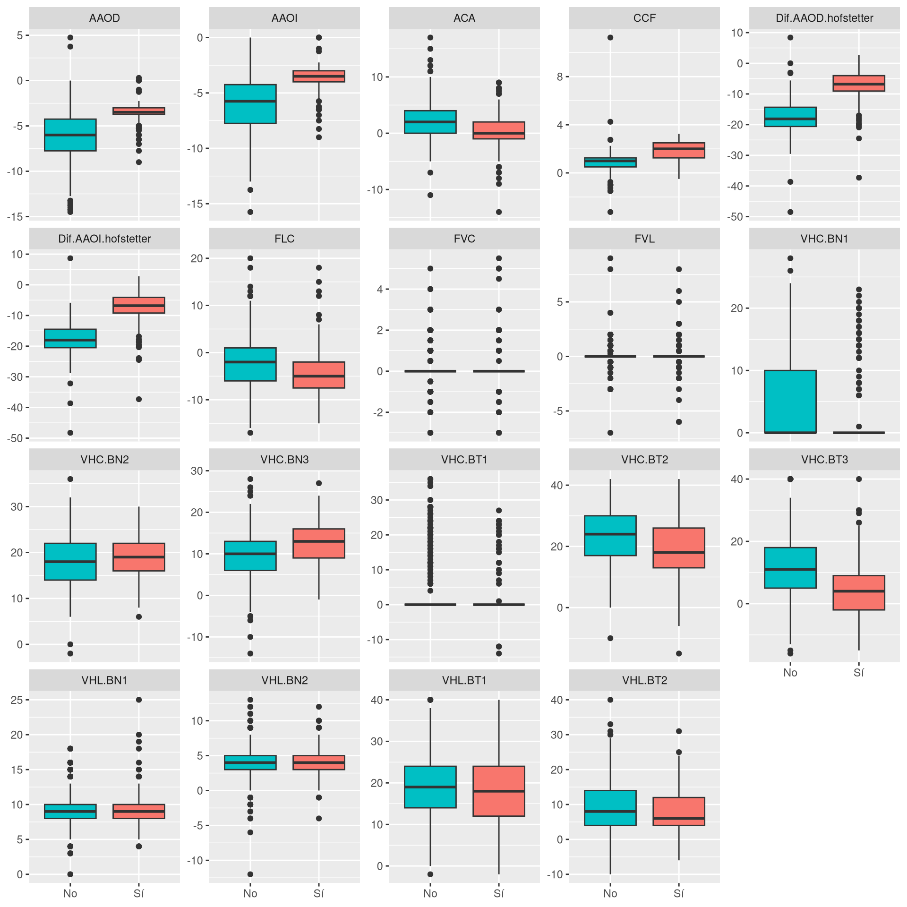

Correlación (última revisión)
Los pacientes con varias revisiones aportan mediciones que no son independientes entre sí, lo que invalida los contrastes de hipótesis habituales. Para evitarlo, este documento repite los análisis de correlación tomando una única revisión por paciente: la más reciente con fecha válida. Se descartan las fechas incoherentes (revisión anterior o igual a la fecha de nacimiento, o posterior a la fecha actual), y en los pacientes cuya única revisión tiene una fecha incoherente se mantiene esa revisión.
De este modo se pasa de 807 revisiones a 309 pacientes, cada uno con una sola observación, de manera que todas las observaciones son independientes. Como contrapartida, se descarta información: los pacientes con seguimiento aportan lo mismo que los que solo tienen una revisión, y no se puede estudiar la evolución de las variables. El documento de correlación con medidas repetidas aprovecha todas las revisiones mediante modelos que tienen en cuenta esa dependencia.
Correlaciones entre variables clínicas

Correlación con variables de baja variabilidad o muy asimétricas (HIP.D, HIP.I, MIO.D, MIO.I, AST.D, AST.I, PRE.D, PRE.I)
Los defectos visuales tienen una gran proporción de ceros, que indican ausencia del defecto, por lo que los coeficientes de correlación habituales (Pearson, Spearman, Kendall) tienen poca potencia y son poco fiables para estas variables. Por eso se analizan en dos partes:
- Presencia del defecto: se dicotomiza la variable (sin defecto / con defecto) y se compara la distribución de cada variable independiente entre ambos grupos mediante el test de Wilcoxon-Mann-Whitney, con el coeficiente de correlación biserial por rangos como tamaño del efecto.
- Magnitud del defecto: restringido a los pacientes que presentan el defecto, se calcula la correlación de Kendall entre la magnitud del defecto y cada variable independiente.
HIP.D, HIP.I, PRE.D y PRE.I se codifican como defecto presente cuando el valor es mayor que 0. MIO.D, MIO.I, AST.D y AST.I (dioptrías negativas) se codifican como defecto presente cuando el valor es menor que 0.
| Defecto | Sin defecto | Con defecto | % con defecto |
|---|---|---|---|
| HIP.D | 224 | 85 | 27.5 |
| HIP.I | 228 | 81 | 26.2 |
| MIO.D | 151 | 158 | 51.1 |
| MIO.I | 151 | 158 | 51.1 |
| AST.D | 149 | 160 | 51.8 |
| AST.I | 155 | 154 | 49.8 |
| PRE.D | 211 | 98 | 31.7 |
| PRE.I | 211 | 98 | 31.7 |
HIP.D
| variable | n.no | n.si | r.biserial | p.valor |
|---|---|---|---|---|
| VHC.BT3 | 224 | 85 | -0.419 | 0.000 |
| ACA | 224 | 85 | -0.402 | 0.000 |
| FLC | 224 | 85 | -0.372 | 0.000 |
| CCF | 224 | 85 | 0.340 | 0.000 |
| VHL.BT2 | 224 | 85 | -0.288 | 0.000 |
| VHC.BT2 | 224 | 85 | -0.277 | 0.000 |
| AAOI | 224 | 85 | 0.253 | 0.001 |
| AAOD | 224 | 85 | 0.243 | 0.001 |
| VHC.BN3 | 224 | 85 | 0.209 | 0.004 |
| Dif.AAOI.hofstetter | 224 | 85 | 0.206 | 0.005 |
| Dif.AAOD.hofstetter | 224 | 85 | 0.203 | 0.006 |
| VHC.BN1 | 224 | 85 | -0.170 | 0.009 |
| VHL.BT1 | 224 | 85 | -0.172 | 0.019 |
| VHL.BN2 | 224 | 84 | -0.115 | 0.111 |
| VHL.BN1 | 223 | 83 | -0.079 | 0.277 |
| FVL | 224 | 85 | -0.057 | 0.298 |
| FVC | 224 | 85 | 0.041 | 0.406 |
| VHC.BT1 | 224 | 85 | -0.043 | 0.441 |
| VHC.BN2 | 224 | 85 | 0.032 | 0.666 |
El test de Wilcoxon-Mann-Whitney encuentra diferencias estadísticamente significativas (p < 0.05) en 13 de las 19 variables independientes entre los grupos con y sin HIP.D. Las asociaciones más fuertes (mayor |r biserial|) son: VHC.BT3 (r biserial = -0.42, p < 0.001); ACA (r biserial = -0.4, p < 0.001); FLC (r biserial = -0.37, p < 0.001).

| variable | n | tau | p.valor |
|---|---|---|---|
| VHL.BT1 | 85 | -0.170 | 0.033 |
| VHC.BT2 | 85 | -0.160 | 0.045 |
| CCF | 85 | 0.157 | 0.054 |
| Dif.AAOI.hofstetter | 85 | 0.139 | 0.074 |
| AAOD | 85 | 0.136 | 0.090 |
| VHL.BN2 | 85 | -0.142 | 0.091 |
| VHL.BT2 | 85 | -0.134 | 0.094 |
| AAOI | 85 | 0.127 | 0.111 |
| Dif.AAOD.hofstetter | 85 | 0.122 | 0.118 |
| VHC.BT3 | 85 | -0.120 | 0.132 |
| VHC.BN1 | 85 | -0.087 | 0.330 |
| FVC | 85 | -0.087 | 0.340 |
| FVL | 85 | -0.084 | 0.354 |
| ACA | 85 | -0.055 | 0.495 |
| VHL.BN1 | 85 | -0.046 | 0.585 |
| FLC | 85 | 0.028 | 0.725 |
| VHC.BN3 | 85 | 0.027 | 0.734 |
| VHC.BT1 | 85 | -0.004 | 0.963 |
| VHC.BN2 | 85 | 0.002 | 0.981 |
Entre los pacientes con HIP.D (n = 85), la correlación de Kendall muestra 2 asociaciones estadísticamente significativas (p < 0.05) con la magnitud del defecto, de un total de 19 variables independientes. Las más destacadas (mayor |tau|) son: VHL.BT1 (tau = -0.17, p = 0.033); VHC.BT2 (tau = -0.16, p = 0.045).
HIP.I
| variable | n.no | n.si | r.biserial | p.valor |
|---|---|---|---|---|
| CCF | 228 | 81 | 0.373 | 0.000 |
| VHC.BT3 | 228 | 81 | -0.362 | 0.000 |
| FLC | 228 | 81 | -0.345 | 0.000 |
| ACA | 228 | 81 | -0.324 | 0.000 |
| VHL.BT2 | 228 | 81 | -0.314 | 0.000 |
| AAOI | 228 | 81 | 0.259 | 0.001 |
| VHC.BT2 | 228 | 81 | -0.236 | 0.002 |
| AAOD | 228 | 81 | 0.226 | 0.003 |
| Dif.AAOI.hofstetter | 228 | 81 | 0.204 | 0.006 |
| Dif.AAOD.hofstetter | 228 | 81 | 0.195 | 0.009 |
| VHC.BN1 | 228 | 81 | -0.157 | 0.017 |
| VHC.BN3 | 228 | 81 | 0.165 | 0.027 |
| VHL.BT1 | 228 | 81 | -0.130 | 0.081 |
| VHC.BT1 | 228 | 81 | -0.082 | 0.145 |
| VHL.BN2 | 228 | 80 | -0.107 | 0.148 |
| FVL | 228 | 81 | -0.066 | 0.239 |
| FVC | 228 | 81 | 0.048 | 0.334 |
| VHL.BN1 | 227 | 79 | -0.050 | 0.499 |
| VHC.BN2 | 228 | 81 | 0.035 | 0.637 |
El test de Wilcoxon-Mann-Whitney encuentra diferencias estadísticamente significativas (p < 0.05) en 12 de las 19 variables independientes entre los grupos con y sin HIP.I. Las asociaciones más fuertes (mayor |r biserial|) son: CCF (r biserial = 0.37, p < 0.001); VHC.BT3 (r biserial = -0.36, p < 0.001); FLC (r biserial = -0.34, p < 0.001).

| variable | n | tau | p.valor |
|---|---|---|---|
| VHL.BT1 | 81 | -0.169 | 0.038 |
| VHC.BT2 | 81 | -0.152 | 0.063 |
| ACA | 81 | -0.124 | 0.135 |
| VHL.BT2 | 81 | -0.112 | 0.175 |
| Dif.AAOI.hofstetter | 81 | 0.076 | 0.341 |
| AAOD | 81 | 0.076 | 0.352 |
| VHC.BT3 | 81 | -0.073 | 0.366 |
| AAOI | 81 | 0.069 | 0.401 |
| FVL | 81 | -0.073 | 0.431 |
| Dif.AAOD.hofstetter | 81 | 0.060 | 0.449 |
| CCF | 81 | 0.063 | 0.450 |
| VHL.BN2 | 81 | -0.058 | 0.499 |
| FVC | 81 | -0.049 | 0.596 |
| VHC.BN1 | 81 | -0.044 | 0.626 |
| VHC.BN3 | 81 | 0.033 | 0.687 |
| VHC.BN2 | 81 | -0.015 | 0.855 |
| VHC.BT1 | 81 | 0.015 | 0.867 |
| VHL.BN1 | 81 | -0.014 | 0.874 |
| FLC | 81 | 0.012 | 0.884 |
Entre los pacientes con HIP.I (n = 81), la correlación de Kendall muestra 1 asociación estadísticamente significativa (p < 0.05) con la magnitud del defecto, de un total de 19 variables independientes. Se trata de: VHL.BT1 (tau = -0.17, p = 0.038).
MIO.D
| variable | n.no | n.si | r.biserial | p.valor |
|---|---|---|---|---|
| VHC.BT3 | 151 | 158 | 0.266 | 0.000 |
| AAOI | 151 | 158 | -0.257 | 0.000 |
| ACA | 151 | 158 | 0.247 | 0.000 |
| AAOD | 151 | 158 | -0.243 | 0.000 |
| CCF | 151 | 158 | -0.240 | 0.000 |
| VHC.BT2 | 151 | 158 | 0.229 | 0.000 |
| FLC | 151 | 158 | 0.210 | 0.001 |
| VHL.BT2 | 151 | 158 | 0.206 | 0.002 |
| Dif.AAOI.hofstetter | 151 | 158 | -0.176 | 0.008 |
| Dif.AAOD.hofstetter | 151 | 158 | -0.167 | 0.011 |
| VHL.BN2 | 150 | 158 | 0.156 | 0.016 |
| VHL.BT1 | 151 | 158 | 0.141 | 0.032 |
| VHL.BN1 | 149 | 157 | 0.130 | 0.044 |
| VHC.BN2 | 151 | 158 | 0.105 | 0.110 |
| FVL | 151 | 158 | 0.075 | 0.129 |
| VHC.BN1 | 151 | 158 | 0.071 | 0.222 |
| VHC.BN3 | 151 | 158 | -0.075 | 0.253 |
| VHC.BT1 | 151 | 158 | -0.038 | 0.447 |
| FVC | 151 | 158 | -0.012 | 0.777 |
El test de Wilcoxon-Mann-Whitney encuentra diferencias estadísticamente significativas (p < 0.05) en 13 de las 19 variables independientes entre los grupos con y sin MIO.D. Las asociaciones más fuertes (mayor |r biserial|) son: VHC.BT3 (r biserial = 0.27, p < 0.001); AAOI (r biserial = -0.26, p < 0.001); ACA (r biserial = 0.25, p < 0.001).

| variable | n | tau | p.valor |
|---|---|---|---|
| VHC.BT1 | 158 | 0.161 | 0.012 |
| FLC | 158 | 0.131 | 0.019 |
| VHC.BN3 | 158 | -0.112 | 0.047 |
| VHL.BN2 | 158 | -0.114 | 0.051 |
| ACA | 158 | 0.106 | 0.062 |
| VHC.BN1 | 158 | 0.112 | 0.065 |
| FVL | 158 | -0.087 | 0.168 |
| Dif.AAOD.hofstetter | 158 | -0.059 | 0.281 |
| Dif.AAOI.hofstetter | 158 | -0.057 | 0.297 |
| VHC.BT3 | 158 | -0.054 | 0.328 |
| VHL.BT1 | 158 | -0.053 | 0.347 |
| FVC | 158 | -0.048 | 0.454 |
| AAOI | 158 | 0.038 | 0.496 |
| CCF | 158 | 0.033 | 0.564 |
| VHL.BT2 | 158 | -0.030 | 0.592 |
| AAOD | 158 | 0.028 | 0.615 |
| VHC.BN2 | 158 | -0.021 | 0.713 |
| VHL.BN1 | 158 | -0.018 | 0.754 |
| VHC.BT2 | 158 | 0.017 | 0.767 |
Entre los pacientes con MIO.D (n = 158), la correlación de Kendall muestra 3 asociaciones estadísticamente significativas (p < 0.05) con la magnitud del defecto, de un total de 19 variables independientes. Las más destacadas (mayor |tau|) son: VHC.BT1 (tau = 0.16, p = 0.012); FLC (tau = 0.13, p = 0.019); VHC.BN3 (tau = -0.11, p = 0.047).
MIO.I
| variable | n.no | n.si | r.biserial | p.valor |
|---|---|---|---|---|
| VHC.BT3 | 151 | 158 | 0.275 | 0.000 |
| CCF | 151 | 158 | -0.236 | 0.000 |
| AAOI | 151 | 158 | -0.236 | 0.000 |
| VHC.BT2 | 151 | 158 | 0.229 | 0.001 |
| FLC | 151 | 158 | 0.206 | 0.002 |
| VHL.BT2 | 151 | 158 | 0.198 | 0.003 |
| AAOD | 151 | 158 | -0.198 | 0.003 |
| ACA | 151 | 158 | 0.196 | 0.003 |
| Dif.AAOI.hofstetter | 151 | 158 | -0.137 | 0.038 |
| VHL.BN2 | 150 | 158 | 0.129 | 0.045 |
| VHL.BT1 | 151 | 158 | 0.126 | 0.056 |
| Dif.AAOD.hofstetter | 151 | 158 | -0.123 | 0.062 |
| VHL.BN1 | 149 | 157 | 0.100 | 0.121 |
| FVL | 151 | 158 | 0.075 | 0.129 |
| VHC.BN3 | 151 | 158 | -0.089 | 0.177 |
| VHC.BN1 | 151 | 158 | 0.077 | 0.186 |
| VHC.BT1 | 151 | 158 | -0.054 | 0.275 |
| VHC.BN2 | 151 | 158 | 0.025 | 0.698 |
| FVC | 151 | 158 | -0.012 | 0.777 |
El test de Wilcoxon-Mann-Whitney encuentra diferencias estadísticamente significativas (p < 0.05) en 10 de las 19 variables independientes entre los grupos con y sin MIO.I. Las asociaciones más fuertes (mayor |r biserial|) son: VHC.BT3 (r biserial = 0.27, p < 0.001); AAOI (r biserial = -0.24, p < 0.001); CCF (r biserial = -0.24, p < 0.001).
| variable | n | tau | p.valor |
|---|---|---|---|
| FLC | 158 | 0.125 | 0.025 |
| VHL.BN2 | 158 | -0.121 | 0.038 |
| VHC.BT1 | 158 | 0.125 | 0.050 |
| VHC.BN3 | 158 | -0.106 | 0.060 |
| VHC.BN1 | 158 | 0.087 | 0.149 |
| FVL | 158 | -0.086 | 0.173 |
| AAOI | 158 | 0.069 | 0.217 |
| VHC.BN2 | 158 | -0.068 | 0.230 |
| AAOD | 158 | 0.065 | 0.243 |
| CCF | 158 | 0.065 | 0.260 |
| ACA | 158 | 0.057 | 0.317 |
| FVC | 158 | -0.064 | 0.319 |
| VHL.BT1 | 158 | -0.051 | 0.363 |
| VHL.BN1 | 158 | -0.041 | 0.489 |
| VHC.BT3 | 158 | -0.035 | 0.530 |
| VHC.BT2 | 158 | 0.035 | 0.533 |
| VHL.BT2 | 158 | -0.033 | 0.551 |
| Dif.AAOD.hofstetter | 158 | -0.032 | 0.555 |
| Dif.AAOI.hofstetter | 158 | -0.025 | 0.654 |
Entre los pacientes con MIO.I (n = 158), la correlación de Kendall muestra 2 asociaciones estadísticamente significativas (p < 0.05) con la magnitud del defecto, de un total de 19 variables independientes. Las más destacadas (mayor |tau|) son: FLC (tau = 0.12, p = 0.025); VHL.BN2 (tau = -0.12, p = 0.038).
AST.D
| variable | n.no | n.si | r.biserial | p.valor |
|---|---|---|---|---|
| VHL.BN2 | 148 | 160 | 0.179 | 0.006 |
| CCF | 149 | 160 | -0.153 | 0.020 |
| FVC | 149 | 160 | -0.088 | 0.044 |
| VHL.BT2 | 149 | 160 | 0.122 | 0.064 |
| VHC.BN3 | 149 | 160 | 0.114 | 0.083 |
| VHL.BT1 | 149 | 160 | 0.088 | 0.182 |
| VHC.BN2 | 149 | 160 | 0.085 | 0.195 |
| AAOI | 149 | 160 | -0.070 | 0.290 |
| AAOD | 149 | 160 | -0.069 | 0.297 |
| VHL.BN1 | 147 | 159 | 0.057 | 0.378 |
| FLC | 149 | 160 | -0.046 | 0.484 |
| VHC.BT1 | 149 | 160 | -0.014 | 0.779 |
| Dif.AAOI.hofstetter | 149 | 160 | -0.017 | 0.794 |
| FVL | 149 | 160 | 0.012 | 0.808 |
| ACA | 149 | 160 | 0.016 | 0.809 |
| VHC.BN1 | 149 | 160 | 0.014 | 0.812 |
| VHC.BT3 | 149 | 160 | 0.015 | 0.818 |
| VHC.BT2 | 149 | 160 | -0.012 | 0.854 |
| Dif.AAOD.hofstetter | 149 | 160 | -0.012 | 0.854 |
El test de Wilcoxon-Mann-Whitney encuentra diferencias estadísticamente significativas (p < 0.05) en 3 de las 19 variables independientes entre los grupos con y sin AST.D. Las asociaciones más fuertes (mayor |r biserial|) son: VHL.BN2 (r biserial = 0.18, p = 0.006); CCF (r biserial = -0.15, p = 0.02); FVC (r biserial = -0.09, p = 0.044).

| variable | n | tau | p.valor |
|---|---|---|---|
| Dif.AAOI.hofstetter | 160 | -0.144 | 0.012 |
| Dif.AAOD.hofstetter | 160 | -0.134 | 0.019 |
| VHC.BT3 | 160 | 0.114 | 0.050 |
| VHC.BN3 | 160 | -0.115 | 0.050 |
| ACA | 160 | 0.111 | 0.061 |
| AAOD | 160 | -0.101 | 0.081 |
| CCF | 160 | -0.097 | 0.103 |
| AAOI | 160 | -0.094 | 0.107 |
| VHC.BN2 | 160 | -0.060 | 0.309 |
| FVC | 160 | 0.062 | 0.359 |
| FLC | 160 | 0.052 | 0.370 |
| VHL.BT1 | 160 | -0.031 | 0.599 |
| VHL.BN1 | 160 | 0.031 | 0.615 |
| FVL | 160 | 0.025 | 0.702 |
| VHC.BN1 | 160 | 0.022 | 0.725 |
| VHC.BT2 | 160 | 0.020 | 0.733 |
| VHC.BT1 | 160 | 0.018 | 0.789 |
| VHL.BT2 | 160 | 0.013 | 0.819 |
| VHL.BN2 | 160 | 0.009 | 0.887 |
Entre los pacientes con AST.D (n = 160), la correlación de Kendall muestra 3 asociaciones estadísticamente significativas (p < 0.05) con la magnitud del defecto, de un total de 19 variables independientes. Las más destacadas (mayor |tau|) son: Dif.AAOI.hofstetter (tau = -0.14, p = 0.012); Dif.AAOD.hofstetter (tau = -0.13, p = 0.019); VHC.BT3 (tau = 0.11, p = 0.05).
AST.I
| variable | n.no | n.si | r.biserial | p.valor |
|---|---|---|---|---|
| VHL.BN2 | 154 | 154 | 0.162 | 0.012 |
| CCF | 155 | 154 | -0.139 | 0.034 |
| AAOD | 155 | 154 | -0.125 | 0.057 |
| AAOI | 155 | 154 | -0.117 | 0.076 |
| Dif.AAOI.hofstetter | 155 | 154 | -0.095 | 0.147 |
| VHC.BN3 | 155 | 154 | 0.093 | 0.155 |
| Dif.AAOD.hofstetter | 155 | 154 | -0.092 | 0.162 |
| FVC | 155 | 154 | -0.059 | 0.178 |
| VHL.BT2 | 155 | 154 | 0.082 | 0.213 |
| VHC.BN2 | 155 | 154 | 0.072 | 0.271 |
| VHL.BT1 | 155 | 154 | 0.064 | 0.329 |
| VHL.BN1 | 153 | 153 | 0.053 | 0.411 |
| VHC.BT3 | 155 | 154 | 0.046 | 0.482 |
| VHC.BT2 | 155 | 154 | 0.034 | 0.605 |
| VHC.BN1 | 155 | 154 | 0.020 | 0.738 |
| VHC.BT1 | 155 | 154 | -0.016 | 0.750 |
| FVL | 155 | 154 | 0.015 | 0.761 |
| FLC | 155 | 154 | -0.012 | 0.852 |
| ACA | 155 | 154 | 0.000 | 1.000 |
El test de Wilcoxon-Mann-Whitney encuentra diferencias estadísticamente significativas (p < 0.05) en 2 de las 19 variables independientes entre los grupos con y sin AST.I. Las asociaciones más fuertes (mayor |r biserial|) son: VHL.BN2 (r biserial = 0.16, p = 0.012); CCF (r biserial = -0.14, p = 0.034).

| variable | n | tau | p.valor |
|---|---|---|---|
| Dif.AAOI.hofstetter | 154 | -0.135 | 0.021 |
| Dif.AAOD.hofstetter | 154 | -0.133 | 0.022 |
| AAOI | 154 | -0.113 | 0.056 |
| VHC.BN3 | 154 | -0.112 | 0.061 |
| AAOD | 154 | -0.107 | 0.070 |
| VHC.BN2 | 154 | -0.084 | 0.164 |
| FVC | 154 | 0.096 | 0.165 |
| VHL.BN2 | 154 | -0.079 | 0.203 |
| VHL.BT2 | 154 | 0.071 | 0.230 |
| VHC.BT3 | 154 | 0.061 | 0.301 |
| VHL.BT1 | 154 | -0.060 | 0.313 |
| FLC | 154 | 0.051 | 0.389 |
| VHC.BT1 | 154 | 0.038 | 0.575 |
| CCF | 154 | -0.033 | 0.590 |
| VHL.BN1 | 154 | -0.030 | 0.627 |
| ACA | 154 | 0.021 | 0.732 |
| VHC.BT2 | 154 | -0.013 | 0.823 |
| FVL | 154 | 0.008 | 0.906 |
| VHC.BN1 | 154 | 0.002 | 0.970 |
Entre los pacientes con AST.I (n = 154), la correlación de Kendall muestra 2 asociaciones estadísticamente significativas (p < 0.05) con la magnitud del defecto, de un total de 19 variables independientes. Las más destacadas (mayor |tau|) son: Dif.AAOI.hofstetter (tau = -0.13, p = 0.021); Dif.AAOD.hofstetter (tau = -0.13, p = 0.022).
PRE.D
| variable | n.no | n.si | r.biserial | p.valor |
|---|---|---|---|---|
| Dif.AAOI.hofstetter | 211 | 98 | 0.919 | 0.000 |
| Dif.AAOD.hofstetter | 211 | 98 | 0.917 | 0.000 |
| AAOD | 211 | 98 | 0.784 | 0.000 |
| AAOI | 211 | 98 | 0.770 | 0.000 |
| CCF | 211 | 98 | 0.704 | 0.000 |
| VHC.BT3 | 211 | 98 | -0.492 | 0.000 |
| VHC.BN3 | 211 | 98 | 0.389 | 0.000 |
| ACA | 211 | 98 | -0.365 | 0.000 |
| FLC | 211 | 98 | -0.297 | 0.000 |
| VHC.BT2 | 211 | 98 | -0.235 | 0.001 |
| VHC.BN2 | 211 | 98 | 0.185 | 0.009 |
| VHL.BT2 | 211 | 98 | -0.163 | 0.021 |
| VHC.BT1 | 211 | 98 | -0.112 | 0.034 |
| VHL.BN2 | 211 | 97 | -0.123 | 0.078 |
| VHL.BN1 | 210 | 96 | -0.116 | 0.096 |
| FVC | 211 | 98 | -0.066 | 0.156 |
| FVL | 211 | 98 | -0.033 | 0.532 |
| VHC.BN1 | 211 | 98 | -0.037 | 0.556 |
| VHL.BT1 | 211 | 98 | -0.031 | 0.657 |
El test de Wilcoxon-Mann-Whitney encuentra diferencias estadísticamente significativas (p < 0.05) en 13 de las 19 variables independientes entre los grupos con y sin PRE.D. Las asociaciones más fuertes (mayor |r biserial|) son: Dif.AAOI.hofstetter (r biserial = 0.92, p < 0.001); Dif.AAOD.hofstetter (r biserial = 0.92, p < 0.001); AAOD (r biserial = 0.78, p < 0.001).

| variable | n | tau | p.valor |
|---|---|---|---|
| CCF | 98 | 0.706 | 0.000 |
| Dif.AAOI.hofstetter | 98 | 0.670 | 0.000 |
| Dif.AAOD.hofstetter | 98 | 0.666 | 0.000 |
| FLC | 98 | -0.291 | 0.000 |
| ACA | 98 | -0.258 | 0.001 |
| AAOD | 98 | 0.240 | 0.001 |
| VHC.BN3 | 98 | 0.209 | 0.005 |
| AAOI | 98 | 0.213 | 0.005 |
| VHC.BT3 | 98 | -0.203 | 0.005 |
| VHC.BN1 | 98 | -0.223 | 0.006 |
| VHC.BT1 | 98 | -0.222 | 0.008 |
| FVL | 98 | -0.193 | 0.018 |
| VHL.BN2 | 98 | -0.169 | 0.028 |
| VHL.BT2 | 98 | -0.154 | 0.036 |
| VHL.BN1 | 98 | -0.129 | 0.097 |
| VHC.BN2 | 98 | 0.113 | 0.129 |
| VHL.BT1 | 98 | -0.028 | 0.703 |
| VHC.BT2 | 98 | -0.009 | 0.897 |
| FVC | 98 | -0.002 | 0.982 |
Entre los pacientes con PRE.D (n = 98), la correlación de Kendall muestra 14 asociaciones estadísticamente significativas (p < 0.05) con la magnitud del defecto, de un total de 19 variables independientes. Las más destacadas (mayor |tau|) son: CCF (tau = 0.71, p < 0.001); Dif.AAOI.hofstetter (tau = 0.67, p < 0.001); Dif.AAOD.hofstetter (tau = 0.67, p < 0.001).
PRE.I
| variable | n.no | n.si | r.biserial | p.valor |
|---|---|---|---|---|
| Dif.AAOI.hofstetter | 211 | 98 | 0.919 | 0.000 |
| Dif.AAOD.hofstetter | 211 | 98 | 0.917 | 0.000 |
| AAOD | 211 | 98 | 0.784 | 0.000 |
| AAOI | 211 | 98 | 0.770 | 0.000 |
| CCF | 211 | 98 | 0.704 | 0.000 |
| VHC.BT3 | 211 | 98 | -0.492 | 0.000 |
| VHC.BN3 | 211 | 98 | 0.389 | 0.000 |
| ACA | 211 | 98 | -0.365 | 0.000 |
| FLC | 211 | 98 | -0.297 | 0.000 |
| VHC.BT2 | 211 | 98 | -0.235 | 0.001 |
| VHC.BN2 | 211 | 98 | 0.185 | 0.009 |
| VHL.BT2 | 211 | 98 | -0.163 | 0.021 |
| VHC.BT1 | 211 | 98 | -0.112 | 0.034 |
| VHL.BN2 | 211 | 97 | -0.123 | 0.078 |
| VHL.BN1 | 210 | 96 | -0.116 | 0.096 |
| FVC | 211 | 98 | -0.066 | 0.156 |
| FVL | 211 | 98 | -0.033 | 0.532 |
| VHC.BN1 | 211 | 98 | -0.037 | 0.556 |
| VHL.BT1 | 211 | 98 | -0.031 | 0.657 |
El test de Wilcoxon-Mann-Whitney encuentra diferencias estadísticamente significativas (p < 0.05) en 13 de las 19 variables independientes entre los grupos con y sin PRE.I. Las asociaciones más fuertes (mayor |r biserial|) son: Dif.AAOI.hofstetter (r biserial = 0.92, p < 0.001); Dif.AAOD.hofstetter (r biserial = 0.92, p < 0.001); AAOD (r biserial = 0.78, p < 0.001).

| variable | n | tau | p.valor |
|---|---|---|---|
| CCF | 98 | 0.706 | 0.000 |
| Dif.AAOI.hofstetter | 98 | 0.670 | 0.000 |
| Dif.AAOD.hofstetter | 98 | 0.666 | 0.000 |
| FLC | 98 | -0.291 | 0.000 |
| ACA | 98 | -0.258 | 0.001 |
| AAOD | 98 | 0.240 | 0.001 |
| VHC.BN3 | 98 | 0.209 | 0.005 |
| AAOI | 98 | 0.213 | 0.005 |
| VHC.BT3 | 98 | -0.203 | 0.005 |
| VHC.BN1 | 98 | -0.223 | 0.006 |
| VHC.BT1 | 98 | -0.222 | 0.008 |
| FVL | 98 | -0.193 | 0.018 |
| VHL.BN2 | 98 | -0.169 | 0.028 |
| VHL.BT2 | 98 | -0.154 | 0.036 |
| VHL.BN1 | 98 | -0.129 | 0.097 |
| VHC.BN2 | 98 | 0.113 | 0.129 |
| VHL.BT1 | 98 | -0.028 | 0.703 |
| VHC.BT2 | 98 | -0.009 | 0.897 |
| FVC | 98 | -0.002 | 0.982 |
Entre los pacientes con PRE.I (n = 98), la correlación de Kendall muestra 14 asociaciones estadísticamente significativas (p < 0.05) con la magnitud del defecto, de un total de 19 variables independientes. Las más destacadas (mayor |tau|) son: CCF (tau = 0.71, p < 0.001); Dif.AAOI.hofstetter (tau = 0.67, p < 0.001); Dif.AAOD.hofstetter (tau = 0.67, p < 0.001).